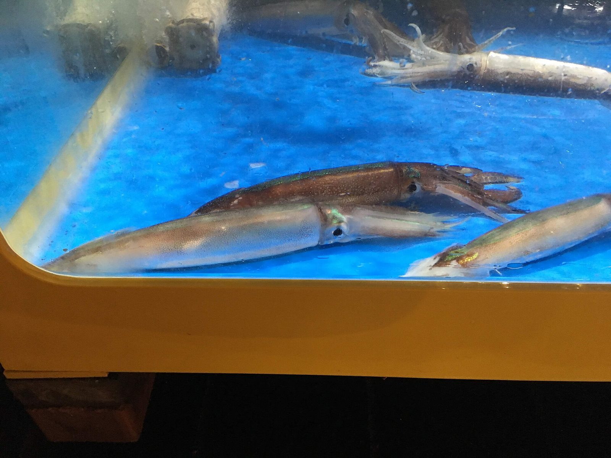
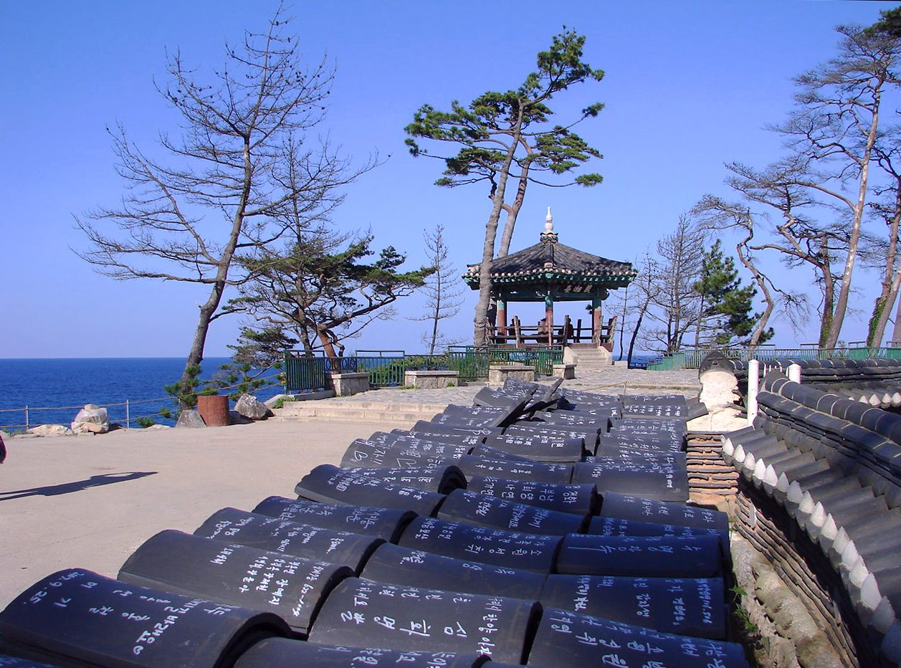
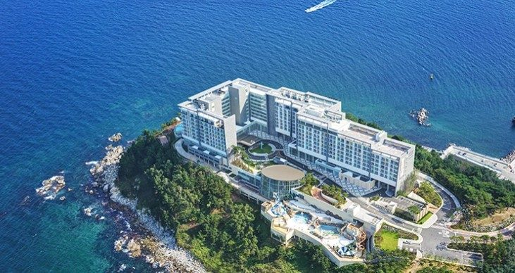

Travel
A small east coast port town at the foot of Seoraksan National Park, with fresh seafood, a lively market and one of Korea's most loved mountain hikes.







Express buses from Seoul reach Sokcho in about two and a half to three hours. It is also an easy bus or taxi ride from Gangneung, an hour or so down the coast.
One or two days: a day for Seoraksan National Park and another for the seafront, Abai Village and the markets.
Local buses run to Seoraksan's main entrance and along the coast; taxis are quick around town.
Mid to late October is the peak for autumn leaves in Seoraksan, and the park is very busy then. Summer brings beach crowds; winter is cold, quiet and good for sunrise views over the East Sea.
Stay by the beach or the port for the sea and the markets, or near Seoraksan's entrance if you want an early start on the trails.
Seoraksan National Park is the main reason most people come: take the cable car toward Gwongeumseong fortress for a view with little effort, or hike to Ulsanbawi rock if you are fit. In town, a small hand-pulled ferry crosses to Abai Village, settled by refugees from the North during the Korean War. Naksansa temple stands on a cliff above the sea a short ride south.
Sokcho Tourist and Fishery Market (Jungang Market) is the place for dakgangjeong, crispy sweet fried chicken sold in boxes, and for fresh seafood. Abai Village is known for squid sundae, squid stuffed with rice and vegetables, and for naengmyeon. Mulhoe, a cold spicy raw fish soup, is a summer favourite along the coast.
Seoraksan's autumn colours peak in mid to late October, and the park is extremely busy then, especially at weekends; go on a weekday and start early. Some higher trails close during dry seasons for fire prevention. Sokcho also makes a good two-day trip combined with Gangneung by bus along the coast.